이 Idleon Mining 빌드 가이드로 채광 효율을 극대화하여 World 3까지 광석 획득량을 최대로 끌어올리세요. Warrior가 구리·철·금 등을 채굴하면 장비 및 계정 업그레이드에 필요한 광석을 확보할 수 있습니다.
다음 단계의 광석을 캐는 방법이 궁금하다면, 이 페이지에 World 3까지 채광 효율을 높이는 최고의 원천들이 정리되어 있습니다. 이후 단계는 Idleon 위키에 정리된 다양한 일반 스킬 효율 보너스를 통해 자연스럽게 성장합니다.
Mining 빌드 탤런트 (Warrior, Barbarian, Squire)
Warrior 클래스 탤런트는 채광 효율의 핵심 기반을 이루며, 아래 우선순위로 채광 효율을 높여줍니다.
| 탤런트 | 효과 | 비고 |
|---|---|---|
 Brute Efficiency Brute Efficiency | 스킬 효율(Efficiency) 증가 | 채광 효율을 크게 높여주는 1순위 탤런트 |
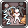 Idle Skilling | AFK(방치) 스킬링 획득량 증가 | AFK 중 광석과 경험치를 높여줌 |
 Big Pick Big Pick | 채광 효율 보너스 | 공격 바에 배치해야 효과가 발동되며 수치 폭이 큼 |
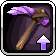 Tool Efficiency | 장착한 곡괭이의 채광력 증가 | 10레벨마다 효과 상승 |
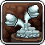 Motherlode Miner | 다중 광석 드롭 확률 증가 | 연금술·Star Signs과 합산 시 초기 최대 300%까지 상승 |
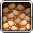 Copper Collector | 보유 구리 수량에 비례해 채광 효율 증가 | 초반 구리 보유량이 적어 효과가 약함 |
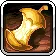 Hungry For Gold | 황금 음식 보너스 증가 | 황금 땅콩(Golden Peanut)의 효율 효과를 높여줌 |
| Tempestuous Emotions | 채광 경험치 획득량 증가 | 레벨 상승으로 더 강한 곡괭이 장착 가능 |
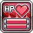 Health Overdrive | 최대 HP % 증가 | World 2 연금술 버블과 조합해 HP를 효율로 전환 |
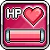 Health Booster | HP 고정 증가 | 연금술 전환을 지원하는 HP 원천 |
| Fist of Rage | 힘(STR) 증가 | 소폭의 채광 보너스 제공 |
 Absolute Unit Absolute Unit | STR 증가 | 위와 동일한 효과 |
| Firmly Grasp It | 일시적으로 STR 크게 증가 | 1포인트만 투자해도 STR 16 제공 — 매우 효율적 |
Barbarian 또는 Squire의 탭 3 스킬 우선순위:
| 탤런트 | 효과 | 비고 |
|---|---|---|
| Super Samples (Squire) | 샘플 크기 증가 (World 3) | 3D 프린터 자동 인쇄에 사용되는 광석 스냅샷 크기 증가 |
 Strongest/Shieldiest Statues Strongest/Shieldiest Statues | 조각상 효과 증가 | 채광 조각상 보너스 강화 |
| STR Summore | STR 증가 | 추가적인 STR 원천 |
| Fistful of Obols | Obols에서 얻는 STR 증가 | 일반적으로 낮은 우선순위 |
특수 탤런트 우선순위:
| 탤런트 | 효과 | 비고 |
|---|---|---|
 Tick Tock Tick Tock | 전투 및 스킬링 AFK 획득량 증가 | 초반 AFK 획득량에 가장 큰 영향을 주는 특수 탤런트 |
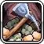 Supersource | 모든 스킬의 기본 효율 증가 | Party Dungeons에서 획득 가능. 철/금 광석 진입 시 효과적 |
 Action Frenzy Action Frenzy | 모든 스킬 속도 증가 | Party Dungeons에서 획득. 스킬 속도 및 카드 수집에 유리 |
 Attacks on Simmer Attacks on Simmer | 공격 이동 AFK 획득량 강화 | Big Pick의 효과를 최대화함 |
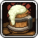 Frothy Malk | 부스트 음식 보너스 증가 | 속도 및 HP 음식 효과 강화 |
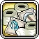 Toilet Paper Postage | 스킬 효율 부여 우표 보너스 증가 | 우표 레벨이 높아질수록 눈에 띄는 효과 |
| Rando Event Looty | AFK 획득률 증가 | 랜덤 이벤트 전리품에 따라 소폭 상승 |
| Dummy Thicc Stats | 전체 스탯 % 증가 | 계정 성장에 따라 점점 강력해짐 |
| Ubercharged Health | 기본 HP 증가 | HP→채광력 전환 지원 |
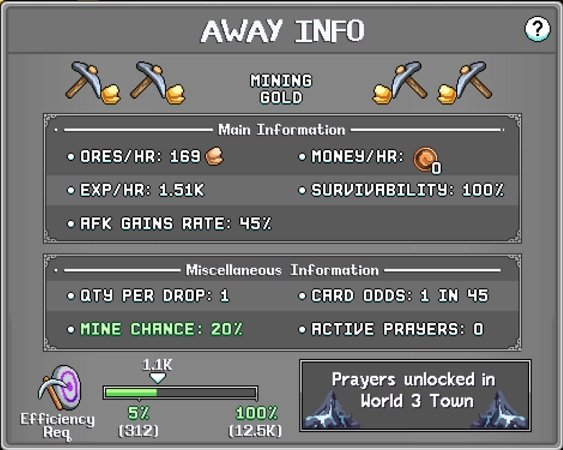
Mining 장비
곡괭이 외에도 장비 슬롯을 통해 채광 능력을 크게 높일 수 있습니다.
| 장비 (슬롯) | 효과 | 비고 |
|---|---|---|
| Viking Cap (투구) | 채광 효율 10% | 모루 제작 |
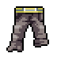 Dirty Coal Miner Baggy Soot Pants (바지) | 채광 효율 5% | 모루 제작 |
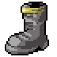 Cavern Trekkers (신발) | 채광 효율 20% | 모루 제작; Rough Rockers(35%)로 업그레이드 가능 |
| Persephones Bouquet (펜던트) | 스킬 AFK 획득량 15% | Party Dungeons |
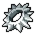 Serrated Rex Ring (반지) | 스킬 효율 8% | Party Dungeons (Rex Ring) → Baba Yaga 드롭 업그레이드 |
 Gilded Efaunt Dislodged Tusks (망토) Gilded Efaunt Dislodged Tusks (망토) | 스킬 효율 10% | Gilded Efaunt (World 2 나이트메어 보스) |
 Blunder Hero (트로피) Blunder Hero (트로피) | 스킬 AFK 획득량 3% | Scripticus (World 1 마을) 퀘스트 라인 |
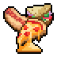 King of Food (트로피) | 음식 효과 20% | Picnic Stowaway (World 1 Froggy Fields) 퀘스트 라인 |
 Time Candy Keychain (열쇠고리) Time Candy Keychain (열쇠고리) | 모든 AFK 획득량 2~5% | Party Dungeons 티어 3 열쇠고리 |
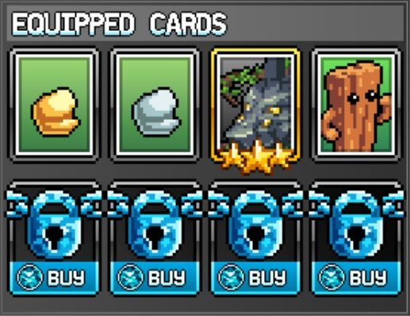
Mining 카드
카드는 효율 및 AFK 획득량을 제공하며, Easy Resources 세트와 함께 사용합니다. 핵심 채광 카드 목록:
| 카드 | 효과 |
|---|---|
| Iron Ore | 총 채광 효율 % |
| Platinum Ore | 채광 AFK 획득량 % |
| Dementia Ore | 채광 속도 % |
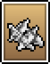 Void Ore | 총 채광 효율 % |
| Bunny | 스킬 AFK 획득률 % |
 Amarok Amarok | 스킬 AFK 획득률 % |
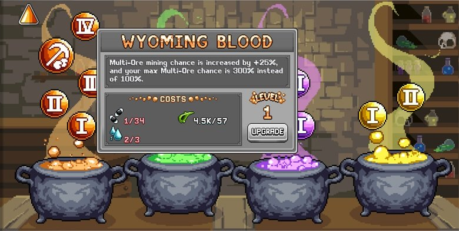
남은 슬롯에는 채광 경험치, STR, 또는 HP 카드로 채울 수 있습니다.
Mining 연금술
연금술 버블은 계정 성장과 함께 점점 큰 이득을 줍니다. 주황색 가마솥 우선순위 (순서대로):
| 연금술 버블 | 효과 | 업그레이드 재료 |
|---|---|---|
| Wyoming Blood (주황 #4) | 다중 광석 확률 증가 (반드시 장착 필요) | Fly |
 Stronk Tools (주황 #8) Stronk Tools (주황 #8) | 곡괭이의 스킬 파워 증가 |  Platinum Ore Platinum Ore |
| Hearty Diggy (주황 #3) | 최대 HP에 비례한 채광 효율 증가 | 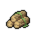 Jungle Logs |
| Warriors Rule (주황 #2) | 주황 패시브 버블의 효과 증폭 | 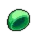 Spore Cap |
| Roid Ragin (주황 #1) | 총 STR 증가 |  Oak Logs Oak Logs |
노란색 Prowesessary 버블 (Potty Rolls로 업그레이드)과 Void Ore 바이알도 채광 효율에 유용합니다.
Mining 빌드 추가 최적화
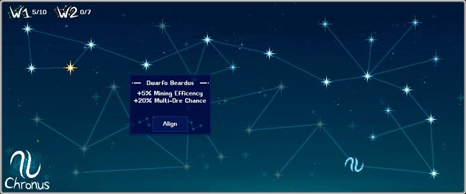
Mining Star Signs
가능한 최대 슬롯에 Star Signs을 장착하되 아래 우선순위로 선택하세요.
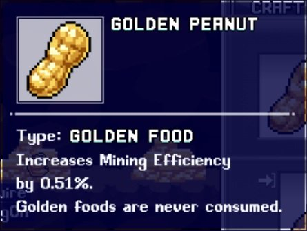
- Dwarfo Beadus (채광 효율 +5%, 다중 광석 확률 +20%)
- The Big Comatose (스킬 AFK 획득량 +2%)
- The OG Killer (휴대 용량 +5%, 스킬 AFK 획득량 +1%, 모든 스킬 Prowess +2%)
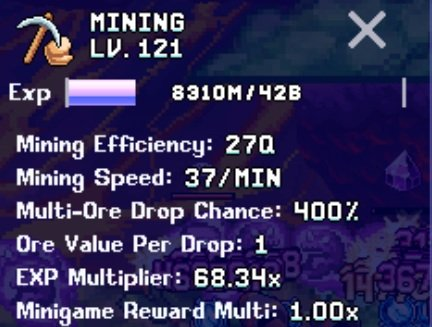
Mining 음식
채광 속도는 최대 62/MIN으로 캡이 있으니, 추가 속도 음식을 넣기 전에 캐릭터 스킬 정보에서 현재 속도를 확인하세요.
| 음식 | 효과 | 출처 |
|---|---|---|
 Icing Ironbite Icing Ironbite | 채광 속도 15% 증가 | 모루 |
| Giftybread Man | 채광 속도 25% 증가 | 이벤트 |
| Stained Pearl | 채광 속도 30% 증가 | 이벤트 |
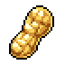 Golden Peanut | 채광 효율 증가 | 모루 |
| Golden Jam | 최대 HP 증가 | World 1 콜로세움 또는 Picnic Stowaway |
| Small Life Potion | 기본 HP +30 | World 1 상점 |
| Average Life Potion | 기본 HP +120 | World 2 상점 |
| Decent Life Potion | 기본 HP +250 | World 3 상점 |
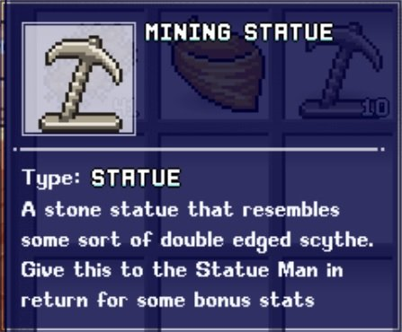
Mining 조각상
| 조각상 | 효과 | 출처 |
|---|---|---|
| Mining Statue | 채광력 증가 | 크리스탈 몬스터 및 World 1 나무 |
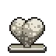 Health Statue | 기본 HP 증가 | 크리스탈 몬스터 |
 Feasty Statue Feasty Statue | 음식 보너스 증가 | 크리스탈 몬스터 |
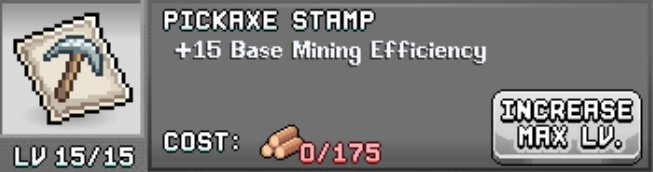
Mining 우표
주요 우표 목록 (HP·STR 우표 제외):
| 우표 (탭) | 효과 | 출처 | 필요 재료 |
|---|---|---|---|
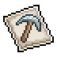 Pickaxe (스킬) | 채광 효율 | Mr Pigibank | Oak Logs |
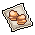 Twin Ores (스킬) | 다중 광석 확률 | Sheepie (World 3 몹) | Thief Hood |
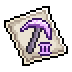 Cool Diggy Tool Stamp (스킬) | 채광 효율 | Snowman (World 3 몹) | 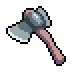 Iron Hatchet |
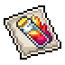 Potion Stamp (기타) | 음식 효과 | Papua Piggea 퀘스트 | Icing Ironbite |
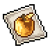 Golden Apple Stamp (기타) | 황금 음식 효과 | Mutton 퀘스트 | Golden Nomwich |

Mining Post Office
주 채굴 캐릭터에게 다음 순서로 박스 포인트를 배분하세요.
| 박스 | 효과 |
|---|---|
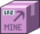 Dwarven Supplies | 채광 효율 %, Prowess 효과 %, 채광 AFK 획득량 % |
| Locally Sourced Organs | 기본 최대 HP +, 최대 HP % |
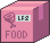 Carepack From Mum | HP 음식 효과 %, 부스트 음식 효과 % |

Mining Obols
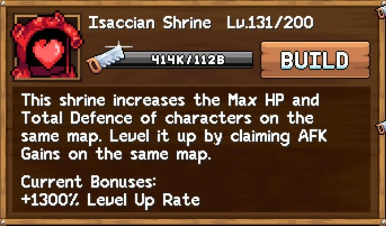
연금술 액체 상점을 통해 채광 Obols를 획득하거나, STR Obols를 개인 및 가족 페이지에 활용하세요.
Mining 신전
World 3의 두 신전이 간접적인 효과를 제공합니다.

| 신전 | 효과 |
|---|---|
| Isaccian Shrine | 최대 HP 증가 |
| Primordial Shrine | AFK 획득량 증가 |

Mining 기도
| 기도 | 효과 | 출처 |
|---|---|---|
| Skilled Dimwit | 스킬 효율 증가, 스킬 경험치 획득량 감소 | Goblin Gorefest 웨이브 25 |
| Zerg Rushogen | AFK 획득률 증가, 휴대 용량 감소 | Goblin Gorefest 웨이브 121 |